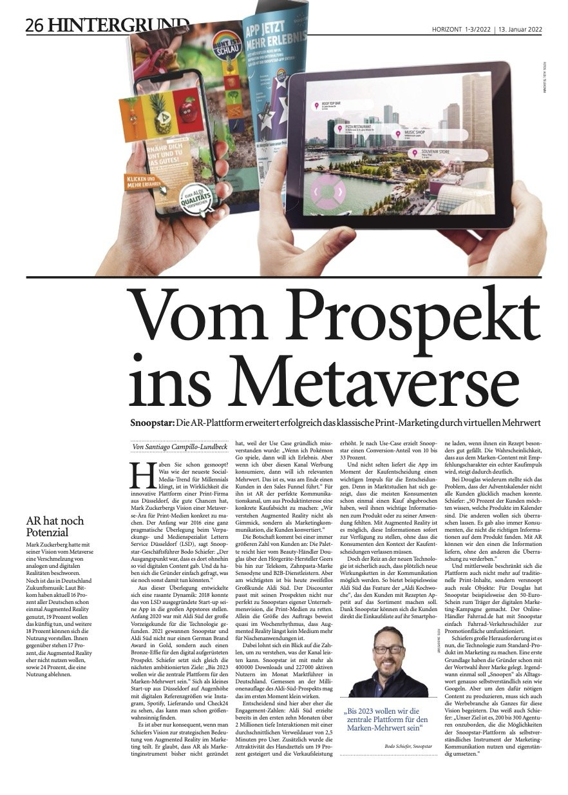
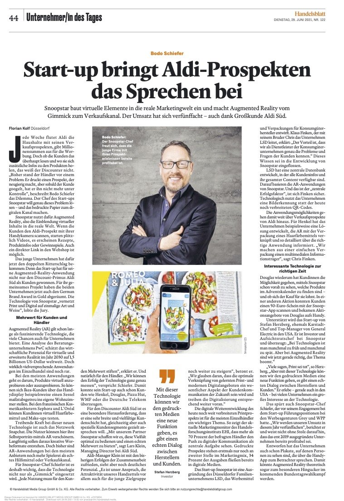
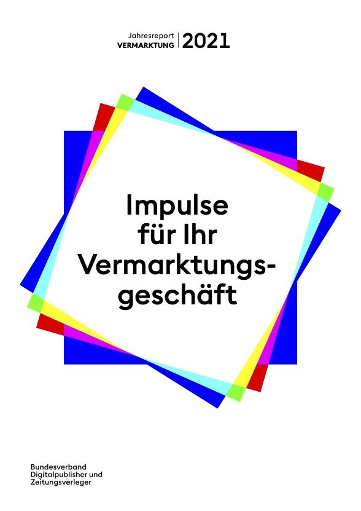
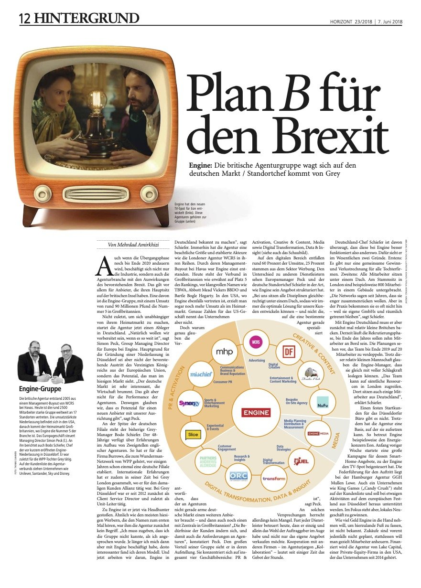

Print trifft Metaverse
Bericht über den strategischen Einsatz von Augmented Reality in Marketingkommunikation und Sales Funnel.
Artikel lesen →Beiträge und Publikationen über unternehmerische Innovationsleistung, Markenführung und den wirksamen Einsatz von Augmented Reality in der Marketingkommunikation.

Bericht über den strategischen Einsatz von Augmented Reality in Marketingkommunikation und Sales Funnel.
Artikel lesen →Buchkapitel über die digitale und innovative Vermarktung von Gebäuden durch Augmented Reality aus Kommunikations-, Vermarktungs- und Transformationssicht.
Zur Publikation →
Porträt über unternehmerische Innovationsleistung, profitables Wachstum und Augmented Reality als wirksames Instrument in der Marketingkommunikation. Mit Auszeichnung als „Unternehmer des Tages".
Artikel lesen →
Fachbeitrag über die strategische Verbindung von Print und Digital im Mediamix sowie den Einsatz von Augmented Reality für Wirkung, Conversion und Optimierung.
Zum Report →

Interview über den Aufbau von snoopstar, die Verbindung von Print und digitalen AR-Erlebnissen sowie den Einsatz von Augmented Reality für Markenkommunikation und Markenbildung.
Interview lesen →
Bericht über den Aufbau des deutschen Geschäfts der britischen Agenturgruppe Engine im Kontext von Expansion und Brexit.
Artikel lesen →Für Presseanfragen und ein unverbindliches Kennenlernen freue ich mich über Ihre Nachricht.
Jetzt Termin buchen